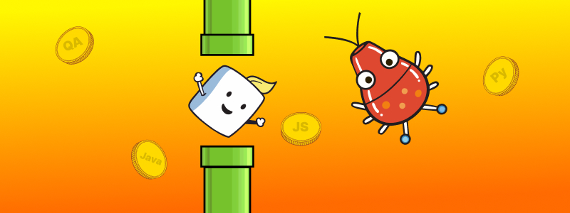

ТЕОРИЯ ТЕСТИРОВАНИЯ + СОФТЫ
-
Расскажите про ваше достижение или проект, которым вы гордитесь?
-
Расскажите структурировано про ваши пет-проекты, процесс обеспечение качества ПО, взаимодействие со смежными командами и все то, что подчеркивает в вас инициативность и командный дух.
-
Представьте, что вы не справляетесь с задачей и горит дедлайн. Ваши действия?
-
Актуализировать сроки завершения задачи и подсветить риски на дейли, общем собрании. Далее указать причины и все риски (отсутствие аналитики, нехватка тестовых данных, сложность взаимодействия со смежными командами). Обратится за помощью к аналитику, QA лиду, самое главное не ждать у моря погоды и отсиживаться.
-
Работал ли ты единственным тестировщиком в команде?
-
Вопрос задается для проверки самостоятельности в команде.
Если вы были не единственным тестировщиком, то какую роль выполняли? Тестировщик – прогоняет ручные тесты, но может их не писать самостоятельно.
-
Тестировали удобства использования?
-
Проводили анализ конкурентов (похожих ПО) и есть ли знания принципов UI/UX.
Можно подсветить коммуникацию с аналитиком и дизайнером
-
Занимался исследовательским тестированием?
-
Проверка опыта проектирования тестовой документации и использования техник тест-дизайна.
Пример: в рамках тест-дизайна исследовательское тестирование использовал до погружения в требования и выявления серых зон.
-
Что такое ad-hoc?
-
Ad-hoc тестирование (также – интуитивное или свободное тестирование) – это метод тестирования ПО, проводимый без какого-либо конкретного плана или заранее определенного набора шагов.
Вместо этого тестировщики используют свою интуицию, опыт и творческий подход для выявления дефектов и проблем, которые не могут обнаружить более формальные методы тестирования.
-
Какие бывают виды требований?
-
Требования делятся на прямые и косвенные.
Прямые - бизнес требования, системные требования, спецификации, макеты приложения, отчеты от заказчика.
Косвенные - анализ конкурентов, UX принципы, удобство использования приложения, отчеты бета-тестов.
-
Бывало такое, что ты не разрешал выпускать фичу в релиз?
-
Вопрос на проверку коммуникации как внутри, так и между командами.
Безусловно были моменты, когда функциональность еще не готова, а сроки релиза не давали возможности закончить тестирование. Я всегда подсвечивал риск обнаружения багов на этапе релиза.
Agile позволяет исправить ошибку в кратчайшие сроки и здесь самое главное подсветить риск и сообщить как можно раньше.
-
Как разрешал конфликт с фронтом или бэком?
-
Вопрос на проверку умения договорится с дорогими коллегами.
На моем опыте приходилось работать в команде, где фронт и бэк разработчики не могли договориться и самое главное в общении подключить третью сторону, чтобы не переходить на личности.
-
Работал без требований? Сталкивался с таким опытом?
-
Столкнулся с поиском серых зон еще на курсе "Ромашка", где нам давали неполные спецификации, по которым мы составляли интеллект-карту и матрицу трассировки для проверки покрытия тест-кейсами тестируемое ПО.
В команде также сталкивался с отсутсвием актуальных требований, но благодаря опыту знаю как ее восстановить в ближайшее время.
Спецификация на проекте:
1 документация в конфлюенсе;
2 макеты фигма;
3 задачи в Jira;
4 User-Story;
5 ТК, ЧЛ;
6 запись звонка с владельцем продукта;
7 презентация для заказчика;
8 корректировки заказчика;
Данный список поможет определить серые зоны и актуальность данных.
-
Что делать, если документации нет, а протестировать функционал нужно уже завтра?
-
Первое: подсветить риск владельцу продукта, что не успеваешь провести необходимое тестирование.
Второе: обозначить срок до какого числа ты закончишь с проверкой.
Если действительно горит выход релиз и риск качества берет на себя ВП, то тестирую по неактуальным требованиям + уточняю работу ПО у аналитика и разраба.
Ответ подразумевает наличие мягких навыков и твою стрессоустойчивость + (неконфликтность).
-
Что такое тестирование? Цель тестирования?
-
Тестирование – процесс сопоставления спецификаций продукта с его финальным результатом. Это не просто поиск багов, а проверка соответствия ожидаемого и фактического результата.
-
Зачем тестировать ПО? Цель тестирования?
-
Для предоставления актуальной информации о состоянии приложения (техническая цель) и повышения доверия пользователей (коммерческая цель).
-
Почему вначале позитивное, а потом негативное тестирование?
-
Сначала убеждаемся в работоспособности функций, а затем пытаемся найти ошибки через негативное тестирование.
-
Назовите пользу негативных тестов
-
Негативное тестирование помогает выявить скрытые дефекты.
Пример: Телеграм внедрил премиум подписки, но команда при тестировании новых возможностей не учла отмену подписки после оплаты.
В итоге после отмены подписка оставалась у пользователя, но деньги все же возвращались на карту. Таким образом компания потеряла большую сумму.
Один из примеров для чего необходимо проводить негативное тестирование, хоть пример можно отнести ближе к функциональному тестированию.
-
Чем отличаются типы, уровни, методы? Расскажи про каждый атрибут.
-
Типы тестирования (например, функциональное, регрессионное) определяют, что проверяется;
уровни тестирования (модульное, интеграционное, системное, приемочное) описывают этапы проверки;
методы тестирования (черного, белого, серого ящика) указывают на подходы к проверке.
Каждый атрибут помогает структурировать процесс тестирования для полного охвата функциональности приложения.
-
Какие уровни тестирования знаете?
-
Модульный (компонентный),
интеграционный,
системный,
приёмочный.
-
Назови церемонии Agile, в которых ты участвовал?
-
Планирование спринта,
Daily,
PBR (Груминг),
Ретро,
Демо (внутреннее и приемка с заказчиком).
-
Виды/Типы тестирования?
-
Функциональное, нефункциональное, тестирование изменений.
-
Виды интеграционного тестирования?
-
Подход «Большого взрыва», нисходящий (сверху вниз), снизу вверх, «сэндвич».
-
Какие техники тест-дизайна знаете?
-
Граничные значения,
классы эквивалентности,
таблицы принятия решений,
причинно-следственная связь,
попарное тестирование,
тестирование состояний,
тестирование сценариев,
исследовательское тестирование.
-
Для чего нужна техника попарного тестирования?
-
Для сокращения числа тестовых проверок при большом количестве вариантов использования.
-
Отличие валидации и верификации?
-
Верификация подтверждает соответствие требованиям, а валидация – достижение поставленной цели.
-
Этапы тестирования?
-
Планирование, подготовка и выполнение тестов, составление отчёта.
Подробнее:
Инициация процесса тестирования.
Выявление прямых и косвенных требований.
Генерация тестовых случаев.
Отбор значимых тестовых случаев.
Проведение проверок.
Фиксация результатов.
Анализ результатов.
Передача информации о соответствии проверенного продукта требованиям.
-
Тестировали методом черного ящика? Какие методы знаете?
-
Метод черного ящика - тестирование ПО без знания его внутренней структуры и реализации. Точнее без необходимости знания внутренней структуры и реализации. QA может знать что под капотом у ПО, но заниматься тестированием от лица пользователя.
Метод серого ящика - тестирование с некоторым представлением о внутренней структуре ПО.
Метод белого ящика - тестирование внутренней структуры и реализации ПО.
-
Назовите основные этапы разработки ПО
-
ИДЕЯ - идея зарождается на любом из этапов разработки, но включается в работу вначале каждого спринта. Пример - тестировщик предложил идею как удобнее расположить форму регистрации на этапе тестирования или заказчик внес корректировки в продукт после выката на пром.
АНАЛИТИКА - системный аналитик начал работу над первичной версией документации к новой фиче. Пример - описание флоу приложения в конфлюенсе. Документация может вносить правки и корректировки даже на этапе разработки, тк приступив к написанию кода могут выясниться технические несостыковки. Это зависи от опыта аналитика и процесса работы в команде. Тестировщик приступает к тест-дизайну на этапе проектирования спецификаций. Не исключение, что QA подключается ещё на этапе идеи.
РАЗРАБОТКА - фронтенд и бэкенд, в идеале, приступают синхронно (в рамках одного спринта) над реаизацией нового функционала или корректировки старого. Вносятся небольшие изменения в спецификацию продукта. Тестировщик корректирует свои ТК в зависимости от изменений.
ТЕСТИРОВАНИЕ - в момент передачи разработкой задач на Ready For Test уже подготовлены ТК и ЧЛ для тестирования, остается сама проверка и оформление статуса, результата тестирования.
ПОДДЕРЖКА (от релиза до прома) - сама поддержка подразумевает сохранение рабочего состояния новой фичи на проме, но в таком случае у нас появляется этап РЕЛИЗ, в данном примере релиз внутри этапа поддержки и с начала переезда на релизный стенд до выката на пром - регрессионное тестирование.
-
Что такое DOR и DOD?
-
DOR (Definition of Ready) – критерии готовности задачи к разработке;
DOD (Definition of Done) – критерии завершённости задачи.
-
Знакомо понятие T-shape?
-
T-shaped специалист – эксперт в одной области, обладающий базовыми знаниями в других.
-
Какая разница между чек-листом и тест-кейсом?
-
Чек-лист — список проверок, а тест-кейс — подробное пошаговое описание пункта из этого списка. На один пункт чек-листа может приходиться несколько тест-кейсов.
По ТК протестировать ПО может человек с улицы, не имеющий представление об этом ПО, а по ЧЛ протестировать может только специалист, который знаком с ПО.
-
Назовите атрибуты хорошего тест-кейса
-
ID,
название,
предусловия,
шаги,
окружение,
результаты (логи, скриншоты, файлы).
-
Что такое баг?
-
Баг - это отличие ожидаемого результата ПО от фактического.
Бывают явные баги, которые содержат статус 4ХХ или UI ошибки, которые не описаны в ожидаемом поведении системы.
-
Какие атрибуты у баг-репорта? Основные поля для заполнения?
-
ID,
название,
описание,
приоритет,
предусловия,
шаги,
постусловия,
ожидаемый и фактический результат,
окружение,
приложения (логи, скриншоты).
-
Какая разница между приоритетом и серьезностью?
-
Приоритет - это порядок, в котором разработчик должен устранить дефект, тогда как серьезность - это степень влияния дефекта на работу продукта.
-
Приведите примеры серьезного, но не приоритетного бага
-
Более приземленный пример: интернет-магазин прислал красное платье вместо бордового. При разработке макетов цвет кнопок поменяли местам ошибочно. Сервис работает, заказы оформляются, но код цвета не тот. Клиент в ярости.
Ошибка в соглашении пользователя (ошибка орфографическая или логическая).
-
Что такое регресс и проверочное тестирование, какая между ними разница?
-
Регрессионное тестирование – полная проверка системы после внесения изменений, проверочное – проверка исправления конкретного бага.
-
Что такое Traceability Matrix?
-
Матрица трассировки – таблица, связывающая требования с тестами или другими элементами, позволяющая оценить покрытие тестами.
-
Что такое «парадокс пестицида»?
-
Принцип, согласно которому повторяющиеся тесты со временем теряют эффективность, поэтому их нужно периодически обновлять.
-
Приведите пример хорошего тест-кейса
-
Название, предусловия, шаги, окружение, подтверждение ожидаемого результата.
Название - Проверить отображение кнопки "Заказать" во вкладке Корзина
Предусловие - В корзине добавлен товар (Кейс 156) В Jira есть возможность добавить общий шаг (ТК внутри нового ТК)
Шаг 1 - Войти под пользователем: Admin пароль: 123
Шаг 2 - Нажать на профиль в правом верхнем углу
Шаг 3 - В отобразившемся боковом меню нажать "Корзина"
Шаг 4 - Проверить активное состояние кнопки "Заказать" (при условии если есть товар для заказа
-
Что такое нагрузочное тестирование и чем отличается от стресс-тестирования?
-
Нагрузочное тестирование оценивает поведение системы под ожидаемой рабочей нагрузкой, измеряя производительность и стабильность.
Стресс-тестирование проверяет систему за пределами нормальных условий, выявляя пределы отказоустойчивости и восстановление после перегрузок.
-
Какие существуют стандарты UI?
-
Принципы KISS, Don't Make Me Think, использование знакомых элементов, упрощение интерфейса и т.д.
Принцип KISS (Keep It Simple, Stupid) - принцип поддержания простоты, без усложнения.
Не заставляй меня думать! - не давай лишний повод думать пользователю, когда можно сделать проще.
Мы удаляем очевидное - не акцентировать внимание на интуитивных действиях.
Соотношение сигнала и шума - убирать ненужные элементы, чтобы не отвлекать пользователя.
Лучше рабочее, чем модное - предпочтение функциональности перед модным дизайном.
Знакомые элементы управления - использование стандартных интерфейсных элементов, которые пользователи уже знают.
Люди не читают - больше использовать визуальные и интерактивные элементы.
Принцип заимствования - использование уже существующих решений, которые хорошо работают.
Бумажник Миллера - ограничение количества элементов в одном функциональном блоке до 5-7.
Принцип группировки - разделение информации на части и дозирование ее представления.
Интуитивная ясность - кнопки и разделы должны быть легко обнаруживаемыми и понятными.
Все полезно на виду - важные элементы интерфейса должны быть видны и выделены.
Принцип 3 клика - пользователь должен достичь нужной информации или раздела не более чем за 3 клика.
Однородность - использование единого стиля во всем продукте.
Способ решения проблемы - продукт должен решать проблемы пользователей, а не создавать новые.
Защита от случайных действий - предотвращение случайного удаления, заказа, пересылки или отправки.
Принцип единства - предоставление возможности управления настройками и элементами управления из одного места, если это необходимо.
Тенденции - учет современных тенденций, чтобы интерфейс не устарел до выхода проекта и соответствовал его целям.
-
Вопросы на софты без конкретного ответа
-
Какая ваша самая сильная/слабая сторона?
Как вы справляетесь с критикой?
Что бы вы хотели улучшить в себе?
Что вы делаете, если вам не хватает ресурсов для задачи?
Как вы приоритизируете задачи?
Как вы отреагируете на просьюу поработать на выходных?
Как вы справляетесь с многозадачностью?
Как вы справляетесь с трудными коллегами?
Что для вас важно в руководителе?
Как вы делитесь знаниями с командой?
Какие роли вы предпочитаете в проекте?
Как вы даете обратную связь?
Как вы убеждаете команду принять ваше предложение?
Какие задачи вас мотивируют?
Как вы справляетесь с рутиной?
Какие проекты вас вдохновляют?
Что вам нравится больше: работать индивидуально или в команде?
Какие навыки вы хотите развить?
Как вы реагируете на неудачи?
Что вы цените больше всего в работе?
Почему вы ушли с предыдущего места работы?
Как вы учились новым навыкам на прошлой работе?
Какие у вас планы на профессиональное развитие?
Что вам нравится больше: фронтенд или бэкенд?
Какие книги/тг каналы по IT вы читали недавно?
Как вы развиваете свои софт-скиллы?
.png)